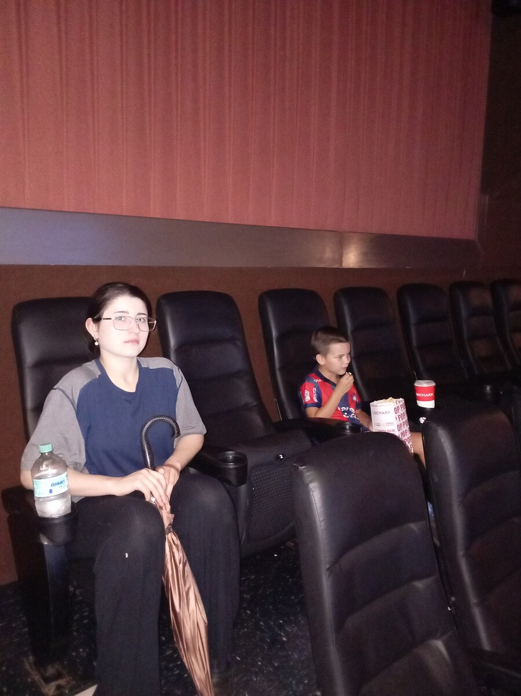

Why Disability Support Plans Must Be Individualized
A useful plan helps another person understand the adult, provide the right assistance, and notice when something needs to change.

A disability support plan needs to be individualized because a diagnosis cannot tell a caregiver how a particular person wants to live. A useful plan describes the adult's communication, preferences, relationships, strengths, support needs, and the practical arrangements that help daily life go well. It also explains who is responsible and when to review what is working.
Two adults can share a diagnosis and need very different things from a home. One may enjoy a busy kitchen and conversation during breakfast. Another may prefer quiet, time to wake up, and someone nearby who does not keep asking questions. Copying the same routine into both plans may look organized on paper while making one person's morning unnecessarily difficult.
For families planning beyond their own years of care, this is a practical concern. How will someone new learn the things that have become almost automatic at home? And how will they leave room for the adult to grow, change their mind, or enjoy something the family has not discovered yet?
Start with the adult's life, not the provider's form
The U.S. Administration for Community Living describes person-centered planning as a process directed by the person receiving support. It includes their strengths, goals, preferences, relationships, cultural context, and support needs. The person should be involved as fully as possible, including when a legal representative participates. ACL: Person-centered planning
A form can organize that conversation. It cannot replace it.
Before filling in boxes, spend time on a few ordinary questions. What does the adult look forward to? Who do they want around? What feels like too much? Which part of the day would they like to change? Ask in ways that work for the person, without turning every answer into a test.
The result should sound like a description of someone you could get to know. If the name were removed and the plan could belong to almost anybody, it needs more work.
Communication belongs near the beginning
“Nonverbal” or “limited communication” does not tell a new supporter how to listen. A communication section should be more useful than a label.
California's Department of Developmental Services notes that someone who does not use words may express preferences through facial expressions, vocalizations, posture, or behavior. Its planning guidance encourages finding meaningful ways to include that person. This is a U.S. state resource, but the reminder to listen beyond speech is relevant to the wider planning conversation. California DDS: Individual Program Planning
Useful notes might explain:
- how the adult says yes, no, enough, help, or “I want something different”;
- which communication tools they use and where those tools should be available;
- how much time they need to respond;
- what helps them understand an unfamiliar activity;
- and who can help a new supporter learn without speaking over the person.
Be careful to distinguish an observation from an interpretation. “Turned away when the room became noisy” describes what happened. “Hates group activities” makes a much wider claim. Record uncertainty honestly and seek qualified communication support when it is needed.
Replace broad labels with useful instructions
A phrase such as “needs help with outings” could cover transport, money, communication, personal care, navigation, or support staying with a group. A person unfamiliar with the family needs to know which parts matter.
Consider this hypothetical example:
| Too vague to guide support | More useful information to establish |
|---|---|
| Needs help getting ready | Which steps the adult does, what help they welcome, and how to offer it |
| Enjoys going out | Which places they choose, how long they usually like to stay, and how they ask to leave |
| Needs a routine | Which parts are important, how changes are explained, and which parts can remain flexible |
| Becomes upset | What was observed, possible concerns to check, what support has helped, and when professional advice is needed |
| Family manages everything | Which tasks each person has agreed to do and who can help if they are unavailable |
These are prompts for building a plan, not ready-made instructions for someone you have not met. The right details come from the adult, people they choose to involve, careful observation, and appropriate assessments.
NICE's guidance for autistic adults also emphasizes communication needs, continuity of relationships, accessible information, and the impact of the physical environment. A plan that ignores those details can miss important reasons why support works in one setting and not another. NICE: Autism in adults
Include enjoyment, relationships, and ordinary choices
It is possible to write pages about appointments and personal care while barely mentioning what makes the person's life enjoyable.
Give relationships a place in the plan. Who does the adult like spending time with? Which visits, groups, traditions, or familiar places matter? What support helps those connections continue? Also leave room for privacy, rest, and the choice not to participate in an activity.
The Arc's future-planning guidance includes daily routines, relationships, values, interests, health information, decision-making support, and community life. It can help families notice areas that a task-focused care list leaves out. The Arc: Making a Future Plan
Goals need to be useful to the adult. Learning a skill may be worthwhile when it makes a chosen activity easier. It should not crowd out every enjoyable part of the week. Life Skills for Autistic Adults With Significant Support Needs explores that distinction in more detail.
Name the people and resources needed to make it happen
“Staff will support community participation” sounds reasonable. It still leaves questions. Which activity does the person want? Who helps arrange it? Is transport available? What happens if the regular support worker cannot come?
For each important arrangement, identify:
- The adult's preference or the need being addressed.
- The specific support that has been agreed.
- The person or service responsible.
- Any equipment, transport, funding, or training required.
- The backup if the first arrangement is unavailable.
- How the adult can say that it is not working.
Be honest about gaps. If there is no confirmed backup yet, write that down as an unresolved task with someone responsible for following it up. An unverified name on a plan can create false reassurance.
Also distinguish a support plan from clinical instructions or legal authority. A family summary can help others understand the adult. It does not authorize someone to change medication, make decisions they are not legally entitled to make, or deliver care outside their competence.
Make the information usable without exposing everything
A short introduction can help a new supporter begin well: how to communicate, what matters today, and where to find the fuller information. Detailed health records and sensitive personal information need appropriate protection and access arrangements.
NCAPPS offers a Health Care Person-Centered Profile designed to help communicate a person's wants and needs in hospital. Its short format is a useful example of making important information easier to find. It is a healthcare communication aid, not a replacement for a full residential support plan, clinical record, or legal document. NCAPPS: Planning resources
Try a practical check with a trusted person who is authorized to see the information. Can they find the current contacts? Can they tell which instructions are current? Do they understand what to ask the adult rather than automatically doing everything for them?
A document should support getting to know someone. It should never be treated as proof that there is nothing more to learn.
Review the plan when the person or circumstances change
A plan can become outdated even when everyone is doing their best. A favorite activity changes. A worker leaves. The person finds a new way to communicate. An arrangement that once helped becomes frustrating.
Agree on a review date and a way to request changes sooner. Reviews should include what is going well, what the adult wants to change, and whether the agreed support is actually available. Ask about the person's experience, not just whether staff completed the tasks.
For example, an activity may appear on a weekly record every Friday. That does not tell you whether the person enjoyed it, wanted to stay, had a way to leave, or would now prefer something else. Useful review questions keep the adult's experience visible.
When changing an arrangement that involves health or safety, involve the relevant professionals. Individualization means thoughtful adaptation, with the right people involved.
What You Can Do This Week
Start with one page headed “What helps me have a good day.” Work with the adult in a format they can use. Add a few things that matter to them, how they communicate a choice, and one everyday task where the help needs to be explained more clearly.
Then choose one existing note and make it more specific. Replace “needs help at meals,” for example, with a description of what help is needed, who has assessed any health-related needs, and where the current instructions can be found.
Finally, identify one unanswered question and one person who can help answer it. You do not have to finish a lifelong plan this week. You can make the next handoff less dependent on guesswork.
For broader preparation, see How to Begin Future Planning Without Having Every Answer.
About Casa de SAM
Casa de SAM is a developing vision for a lifelong residential community in Paraguay. It is not yet an operating residential provider. Individualized support is a principle for the proposed community, not a claim that resident care plans or clinical services are already in place.
A future home would need dependable systems and people who keep paying attention to the adults who live there. A well-written plan can carry important knowledge forward. The person must still have room to surprise us, make choices, and change.
Information reviewed October 30, 2026. This article provides general planning guidance, not individualized clinical or legal advice. U.S. and England-based resources are offered as examples, not as service entitlements or legal requirements in Paraguay. Consult qualified local professionals for health instructions, decision-making authority, and formal service requirements.